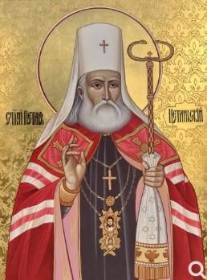

„Hoće li tko za mnom, neka se odreče samoga sebe, neka uzme svoj križ i neka ide za mnom.” (Mt 16,24)

Petar I. Petrović-Njegoš bio je crnogorski knez-episkop i najpopularniji vođa iz dinastije Petrović koji je vladao od 1784. do 1830. godine. Tijekom svoje duge vladavine uspio je ujediniti zavađena plemena, uvesti prve zakone te postaviti temelje modernih državnih institucija poput poreza i škola. Zbog svog ogromnog duhovnog autoriteta i doprinosa narodu, Srpska pravoslavna crkva kanonizirala ga je kao Svetog Petra Cetinjskog.
Njegov rani uspon obilježilo je školovanje u Rusiji i unutrašnja borba za prevlast s guvernadurskom obitelji Radonjić, koja se oslanjala na Austriju, dok je Petar zagovarao rusofilsku politiku. Ključne vojne pobjede protiv Osmanlija, osobito u bitkama kod Martinića i Kruša 1796. godine, ne samo da su osigurale opstanak zemlje već su omogućile i njezino teritorijalno širenje pripajanjem plemena Bjelopavlića i Pipera, čime je nastala država "Crna Gora i Brda".
Na vanjskopolitičkom planu, Petar I. aktivno je surađivao s Karađorđem tijekom Prvog srpskog ustanka te se borio protiv Napoleonove Francuske u Boki Kotorskoj i Dalmaciji. Bio je zagovornik širokog oslobođenja i ujedinjenja, predlažući ruskom caru plan o stvaranju "Slaveno-srpskog carstva". Do kraja života uspješno je mirio krvne osvete među plemenima i učvrstio crnogorski suverenitet, ostavivši iza sebe stabilniju i organiziraniju državu svom nasljedniku, Njegošu.